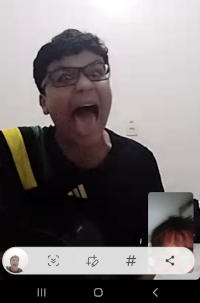

Meu amor, Hoje, enquanto o mundo seguia seu ritmo apressado, eu parei por um instante. Pensei em você. No som da sua voz, no calor do seu abraço, e no jeito como seu olhar me encontra mesmo quando estamos em silêncio. Há algo em você que acalma tudo dentro de mim. Como se, ao seu lado, até o caos tivesse um ritmo bonito. Desde que te conheci, meus dias ganharam novas cores. Não falo apenas das alegrias, mas também da coragem que encontrei para enfrentar o que antes me assustava. Seu amor me fortalece. Seu carinho me cura. Às vezes, tento entender como alguém pode se tornar tão essencial em tão pouco tempo, mas talvez o amor não precise ser explicado — só sentido. E o que eu sinto por você é imenso. Não cabe em palavras, mas eu tento escrever, porque escrever é uma forma de te tocar quando a distância insiste em existir. Quero estar contigo nos dias bons e nos dias difíceis. Quero rir contigo até a barriga doer e chorar contigo quando o mundo pesar. Quero ser abrigo, parceiro, confidente. Quero te amar com calma, com paixão, com verdade. Sei que o futuro é incerto, mas se puder escolher alguém para construir cada novo capítulo, esse alguém é você. Com todos os seus jeitos, suas manias, seus silêncios e sorrisos. Você é meu amor, meu lar e minha promessa. Com todo o meu coração, [Leozinn]
